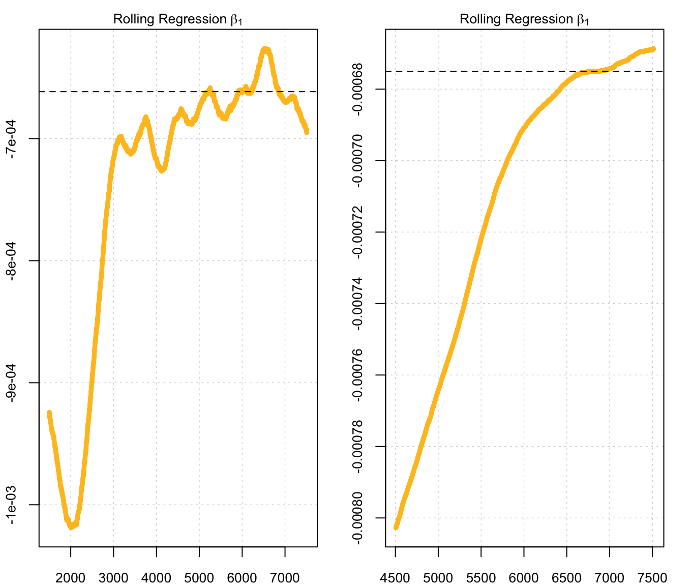
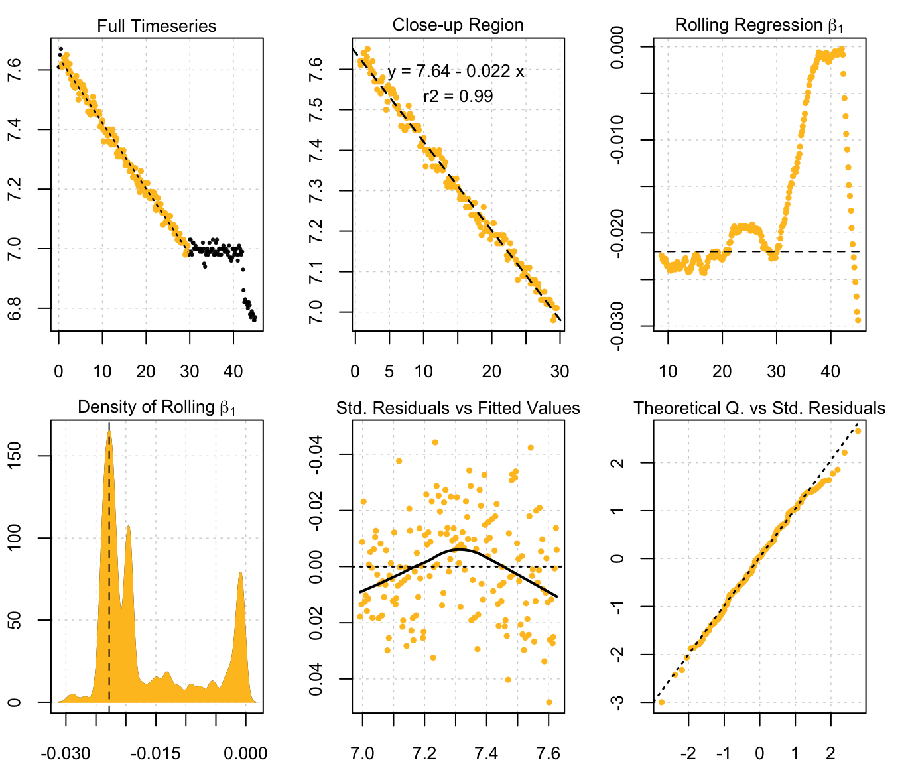
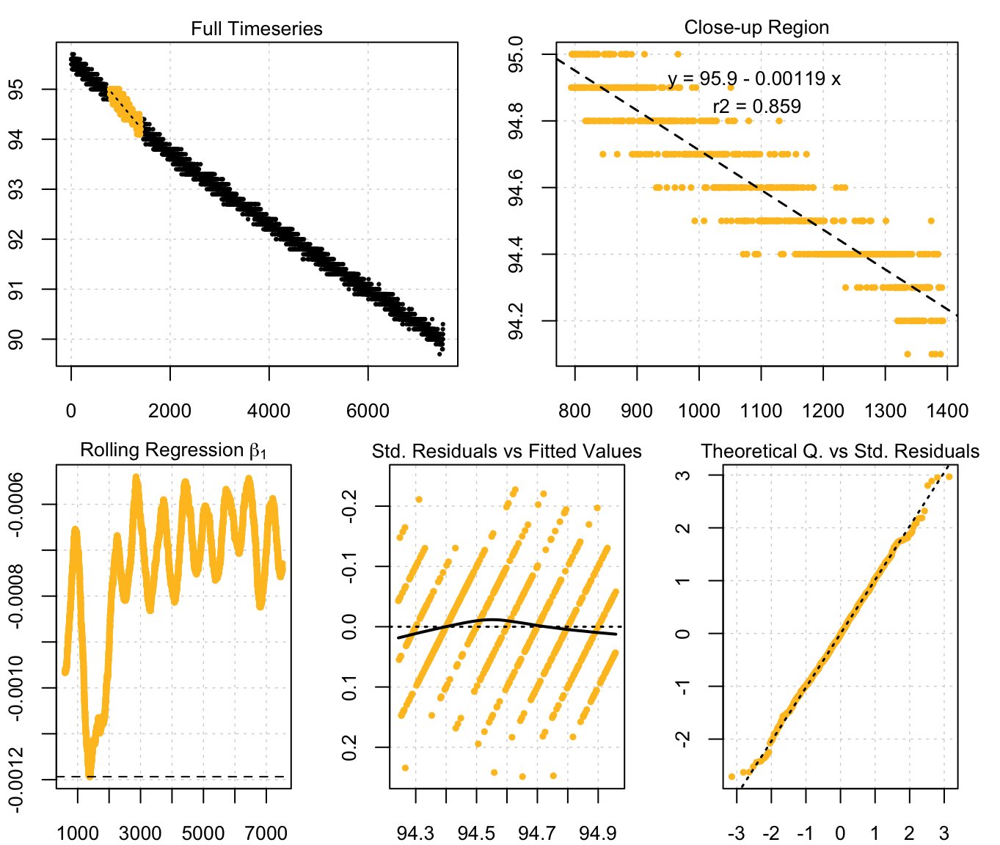
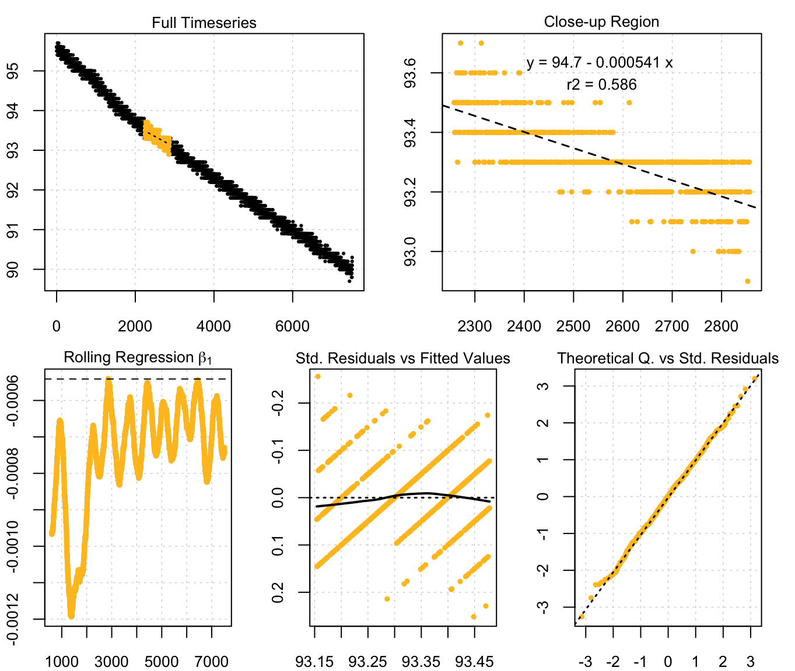

Introduction
In respirometry, we often want to report oxygen uptake rates that represent experimentally important stages or physiological states. These include:
- the most consistent (i.e. most linear) rates observed, often most representative of routine metabolic rates.
- minimum rates observed, often most representative of standard, resting or maintenance metabolic rates.
- maximum rates observed, representative of active or maximal metabolic rates.
The problem is that over long datasets identifying these regions is difficult, and if selected visually are subject to bias and lack of observer objectivity. Other methods, such as fitting multiple, fixed-width linear regressions over the entire dataset to identify regions of minimum or maximum slopes is computationally intensive, and slopes found via this method highly sensitive to the width chosen, especially if the specimen’s metabolic rate may change rapidly.
Here we present auto_rate(), a function in the respR package that uses rolling regression techniques to automatically detect most linear, maximum and minimum rates within a dataset. This function can be used to select linear, max and min rates in an statistically robust, objective way. In this vignette we detail how auto_rate() works, and how it can be used to extract rates from respirometry data. In the LINK vignette, we show how we have tested this method against simulated data, and the LINK vignette its performance against another linear detection method. We show it perfoms extremely well on large datasets in determining linear rates. Importantly, auto_rate() has been optimised to be extremely fast. Other methods on large datasets can take minutes or hours to run. We show how auto_rate() can reduce this wait by orders of magnitude, literally fitting tens of thousands of regressions and detecting linear regions in seconds.
Overview
This illustrates the main processes involved in auto_rate():
auto_rate() works by performing an optimised rolling regression on the dataset. A kernel density estimate is performed on the rolling regression output and the kernel bandwidth used to re-sample linear regions of the data for re-analysis.
Rolling linear regression
The function auto_rate() uses a novel method of combining rolling regression and kernel density estimate algorithms to detect patterns in time series data. The rolling regression runs all possible ordinary least-squares (OLS) linear regressions \((y = \beta_0 + \beta_1 X + \epsilon)\) of a fixed sample width across the dataset, and is expressed as: \[y_t(n) = X_t(n) \beta (n) + \epsilon_t(n), \ t = n,\ ...,\ T\] where \(T\) is the total length of the dataset, \(n\) is the window of width \(n < T\), \(y_t(n)\) is the vector of observations (e.g. oxygen concentration), \(X_t(n)\) is the matrix of explanatory variables, \(\beta (n)\) is a vector of regression parameters and \(\epsilon_t(n)\) is a vector of error terms. Thus, a total of \((T - n) + 1\) number of overlapping regressions are fit. These are then ranked to obtain maximum and minimum values. An interval-based rolling regression can be selected (method = "interval"), and it automatically selects non-overlapping sections of the data for regressions, but all other methods fit overlapping regressions.
Kernel density estimation
Additional analytical techniques are automatically applied when we use auto_rate() to detect linear sections of the data. First, we take advantage of the key assumption that linear sections of a data series are reflected by stable parameters across the rolling estimates, a property that is often applied in financial statistics to evaluate model stability and make forward predictions on time-series data (see Zivot and Wang 2006). We use kernel density estimation (KDE) techniques, often applied in various inference procedures such as machine learning, pattern recognition and computer vision, to automatically aggregate stable (i.e. linear) segments as they naturally form one or more local maximums (“modes”) in the probability density estimate.
KDE requires no assumption that the data is from a parametric family, and learns the shape of the density automatically without supervision. KDE can be expressed as: \[\hat{f}(x) = \frac{1}{nh^d}\sum_{i = 1}^{n} K \left(\frac{x - X_i}{h} \right)\] where \(f\) is the density function from an unknown distribution \(P\) for \(X_1,...,X_n\), \(K\) is the kernel function and \(h\) is the optimal smoothing bandwidth. The smoothing bandwidth is computed using the solve-the-equation plug-in method (Sheather et al. 1996, Sheather and Jones 1991) which works well with multimodal or non-normal densities (Raykar and Duraiswami 2006).
We then use \(h\) to select all values in the rolling regression output that match the range of values around each mode (\(\theta_n\)) of the KDE (i.e. \(\theta_n \pm h\)). These rolling estimates are grouped and ranked by size, and the upper and lower bounds of the data windows they represent are used to re-select the linear segment of the original data series. The rolling estimates are then discarded while the detected data segments are analysed using linear regression.
Adjusting the width of rolling regressions
By default, auto_rate()’s rolling regression uses a rolling window value in rows of 0.2 multiplied by the total length of the number of samples. This can be changed by changing the width argument, to a proportion relative to the total size of the data (width = 0.1, by = "row") or a fixed value in the time metric (width = 3000, by = "time").
It is important to note that the width determines the exact width of the data segments produced for max, min and interval rates. This allows the user to consistently report results across experiments, such as reporting the maximum or minimum rates sustained over a specified time period.
Importantly, the width does not restrict the maximum width of the segments produced for linear detection. We advise users to use caution when changing the width argument if using method = "linear". Choosing an inappropriate width value tends to over-fit the data for rolling regression.
Below, we show the differences in the shape of the rolling regressions when using a width of 0.6 to analyse sardine.rd:
# Perform linear detection; default width (when not specified) is 0.2:
normx <- auto_rate(sardine.rd, plot = FALSE)
#>
#> 46 kernel density peaks detected and ranked.
# Perform linear detection using manual width of 0.6:
overx <- auto_rate(sardine.rd, plot = FALSE, width = .6)
#>
#> 19 kernel density peaks detected and ranked.
# Plot ONLY the rolling regression plots for comparison:
par(mfrow = c(1, 2), mai = c(0.4, 0.4, 0.3, 0.3), ps = 10,
cex = 1, cex.main = 1)
plot(normx, choose = 3)
#>
#> # plot.auto_rate # ----------------------
#> Done.
plot(overx, choose = 3)
#>
#> # plot.auto_rate # ----------------------
#> Done.Under perfectly linear conditions, we would expect the rolling regression output to produce a straight, horizontal line with a slope of 0, i.e. a very stable plot. Since KDE automatically aggregates stable values, a poor selection of the width value may result in a badly-characterised rolling estimate output. In the example presented above, while the default width showed a pattern of relative stability after 3,000 seconds, that information was lost when a width of 0.6 was used. Thus, the KDE technique would not have had the appropriate information necessary to correctly detect any linear patterns in the same data.
Most linear rates
By default, auto_rate() identifies the most linear region of the data (i.e. method = "linear"):
x <- urchins.rd[,c(1,15)]
auto_rate(x)
#>
#> 10 kernel density peaks detected and ranked.
#>
#> # auto_rate # ---------------------------
#> Data is subset by row using width of 48
#> Rates were computed using 'linear' method
#> 10 linear regions detected in the kernel density estimate
#>
#> Rank 1 of 10 :
#> Rate: -0.02200647
#> R.sq: 0.99
#> Rows: 5 to 178
#> Time: 0.7 to 29.5This represents the most consistently linear region, that is most consistent rate observed during the experiment. It does this in a statistically rigorous manner, which removes observer subjectivity from choosing which rate is most appropriate to report in their results. It calculates these most linear rates across all possible data window widths, so this also removes the need to the user to specify this. It is a statistically robust way of indentifying and reporting consistent rates in respirometry data.
Minimum and maximum rates
auto_rate() can also be used to detect the maximum and minimum rates over a fixed sample width, either as proportion of the dataset (e.g. the default width = 0.2, by = "row"), or a fixed period of time (e.g. width = 600, by = "time"). This allows for consistent reporting of respirometry results, such as the maximum or minimum rates sustained over a specified time period. Note, that while still fast in comparison to some other methods, this second method of specifying a time window can be considerably slower. This is because it is telling auto_rate() that the time data may have gaps or not be evenly spaced, and so the function calculates each (in this example) 600 point width using the raw time values, rather than assuming a specific row width represents the same time window. If your data is without gaps and evenly spaced with regards to time, this option is not really necessary, and by = row and the correct proportional width for the time you want should be used, as it is much faster.
Maximum rates:
Here we want to know the maximum rates sustained over 10 minutes, or 600s, in the sardine.rd data. Since in these data, O2 data is recorded every second and inspect() tells us the time data is gapless and evenly spaced, we can simply specify width in the correct number of rows:
inspect(sardine.rd)
#> No issues detected while inspecting data frame.
#>
#> # inspect # -----------------------------
#> Time Oxygen
#> NA/NAN pass pass
#> sequential pass -
#> duplicated pass -
#> evenly-spaced pass -auto_rate(sardine.rd, width = 600, method = "max")
#>
#> # auto_rate # ---------------------------
#> Data is subset by row using width of 600
#> Rates were computed using 'max' method
#>
#> Rank 1 of 6914 :
#> Rate: -0.001193478
#> R.sq: 0.85893
#> Rows: 795 to 1394
#> Time: 794 to 1393Minimum rates:
We can similarly find the minimum rate over 10 minutes, and here we will save the output to object x:
x <- auto_rate(sardine.rd, width = 600, method = "min")
print(x)
#>
#> # auto_rate # ---------------------------
#> Data is subset by row using width of 600
#> Rates were computed using 'min' method
#>
#> Rank 1 of 6914 :
#> Rate: -0.0005399376
#> R.sq: 0.58528
#> Rows: 2260 to 2859
#> Time: 2259 to 2858Additional ranked results:
auto_rate() objects contain all the results for the specified width (or in the case of method = linear all results for all widths). By default, the first ranked (i.e. most maximum or minimum) result is returned, but others and their locations can be examined using the summary command:
summary(x)
#> Regressions : 6914 | Results : 6914 | Method : min | Roll width : 600 | Roll type : row
#>
#> === Summary of Results ===
#>
#> intercept_b0 rate_b1 rsq row endrow time endtime
#> 1: 94.69693 -0.0005399376 0.5852845 2260 2859 2259 2858
#> 2: 94.69981 -0.0005410793 0.5864181 2259 2858 2258 2857
#> 3: 94.70265 -0.0005422043 0.5875352 2258 2857 2257 2856
#> 4: 94.23211 -0.0005430376 0.6155883 5844 6443 5843 6442
#> 5: 94.70663 -0.0005437765 0.5875985 2261 2860 2260 2859
#> ---
#> 6910: 95.90508 -0.0011928894 0.8588085 801 1400 800 1399
#> 6911: 95.90536 -0.0011930839 0.8588811 791 1390 790 1389
#> 6912: 95.90540 -0.0011932450 0.8588905 792 1391 791 1390
#> 6913: 95.90557 -0.0011934783 0.8589309 795 1394 794 1393
#> 6914: 95.90576 -0.0011934783 0.8589309 796 1395 795 1394
#> rowlength timelength
#> 1: 600 599
#> 2: 600 599
#> 3: 600 599
#> 4: 600 599
#> 5: 600 599
#> ---
#> 6910: 600 599
#> 6911: 600 599
#> 6912: 600 599
#> 6913: 600 599
#> 6914: 600 599Particular ranked results can be examined or extracted via the plot and summary commands, using the pos (for position) operator:
## Second most minimum rate detected
plot(x, pos = 2)
#>
#> # plot.auto_rate # ----------------------
#> Done.
summary(x, pos = 2)
#> Regressions : 6914 | Results : 6914 | Method : min | Roll width : 600 | Roll type : row
#>
#> === Summary of Ranked 2 Result ===
#>
#> intercept_b0 rate_b1 rsq row endrow time endtime rowlength
#> 1: 94.69981 -0.0005410793 0.5864181 2259 2858 2258 2857 600
#> timelength
#> 1: 599Note, the output objects of the max and min are essentially identical, the only difference being the results are ordered descending or ascending by rate, respectively. Therefore in this example, the maximum rate (i.e. least minimum) can be found by extracting the last result.
print(x, nrow(x$summary))
#>
#> # auto_rate # ---------------------------
#> Data is subset by row using width of 600
#> Rates were computed using 'min' method
#>
#> Rank 6914 of 6914 :
#> Rate: -0.001193478
#> R.sq: 0.85893
#> Rows: 796 to 1395
#> Time: 795 to 1394
Summary of when to use different auto_rate options
method = linear
In ‘steady state’ experiments. That is, when you are looking for the most consistent or representative rates for what the specimen is experiencing. This could represent routine metabolic rate, or in the case of an animal under constant excercise a consistent active metabolic rate. No width needs to be specified under this option.
method = max
When your specimen is active at some point during the experiment, or has been exercised and placed in a respirometer, and you want to know its maximum rate over a specific time period or row width. The default is width = 0.2, by = "row" (0.2 of total row number) or it can be specified in the time unit, e.g. width = 600, by = "time"). This should be carefully selected, and consistent if you are comparing specimens.
method = min
Similarly, when your specimen is inactive, quiescent, dormant, etc., and you want to know the lowest rates over a specified time period. This is often representative of resting, basal or standard metabolic rates. Again, this necessarily requires a time window (width) to be specified, which should be carefully selected, and consistent if you are comparing specimens.
method = interval This is chiefly for comparison with historical data, or if you have a specific reason to specify non-overlapping regressions. JANUAR!
When not to use auto_rate
-
Flowthrough respirometry data
See?calc_rate.ft. This respirometry method is currently unsupported inauto_rate, but it is in our plans to add this. -
Intermittent flow respirometry, without some subsetting or specification of measurement periods
While we have had generally good results usingauto_rateon intermittent-flow data, there is a strong possibility flush periods could confuse the algorithms on occasion. See LINK vignette for how to get around this. And as always, inspect outputs plots to ensure data locations are relevant.
Further processing
Saved auto_rate() objects can be passed to subsequent respR functions for further processing, such as adjust_rate() to correct for background respiration, or convert_rate() to convert to final O2 uptake rates.
Examples
Examples are available in the reference section. You may also run ?auto_rate in the R console to access some examples in the help file.
References
Jones, M. C., Marron, J. S., & Sheather, S. J. (1996). A Brief Survey of Bandwidth Selection for Density Estimation. Journal of the American Statistical Association, 91(433), 401–407. doi:10.1080/01621459.1996.10476701
Olito, C., White, C. R., Marshall, D. J., & Barneche, D. R. (2017). Estimating monotonic rates from biological data using local linear regression. The Journal of Experimental Biology, jeb.148775-jeb.148775. doi:10.1242/jeb.148775
Raykar, V., & Duraiswami, R. (2006). Fast optimal bandwidth selection for kernel density estimation. In Proceedings of the Sixth SIAM International Conference on Data Mining (Vol. 2006). doi:10.1137/1.9781611972764.53
Sheather, S. J., & Jones, M. C. (1991). A Reliable Data-Based Bandwidth Selection Method for Kernel Density Estimation. Journal of the Royal Statistical Society. Series B (Methodological), 53(3), 683–690.
Zivot, E., & Wang, J. (2006). Modeling Financial Time Series with S-PLUS (2nd ed.). New York: Springer-Verlag.